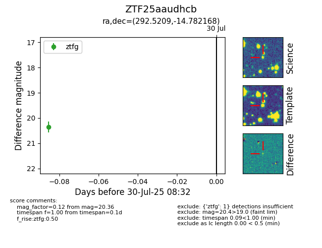

Target ZTF25aaudhcb at 2025-07-30 08:32, see:
FINK: fink-portal.org/ZTF25aaudhcb
Lasair: lasair-ztf.lsst.ac.uk/objects/ZTF25aaudhcb
ALeRCE: alerce.online/object/ZTF25aaudhcb
alt names
ZTF25aaudhcb (ztf,fink)
coordinates:
equatorial (ra, dec) = (292.5209,-14.78217)
galactic (l, b) = (23.8081,-15.11527)
photometry
last ztfg=20.36
1 ztfg detections
